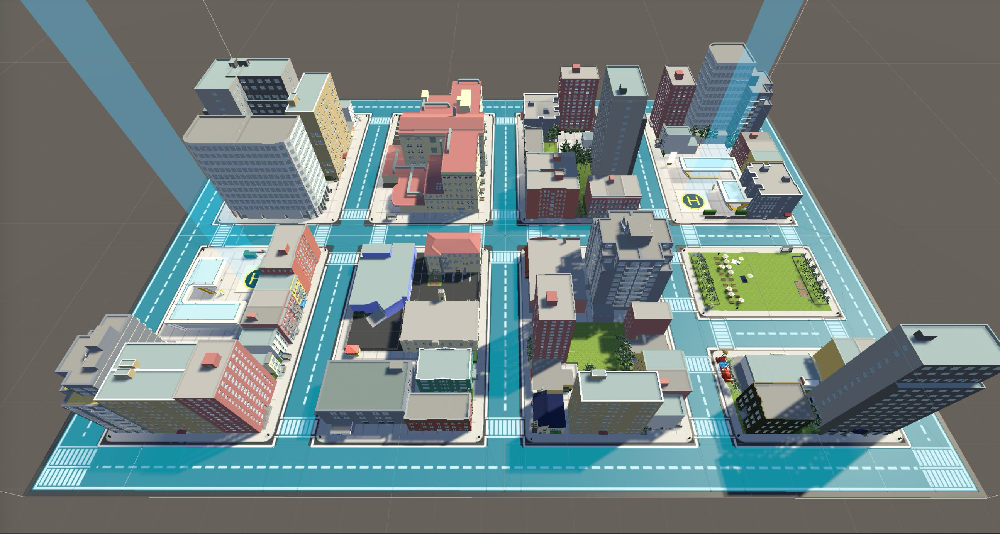
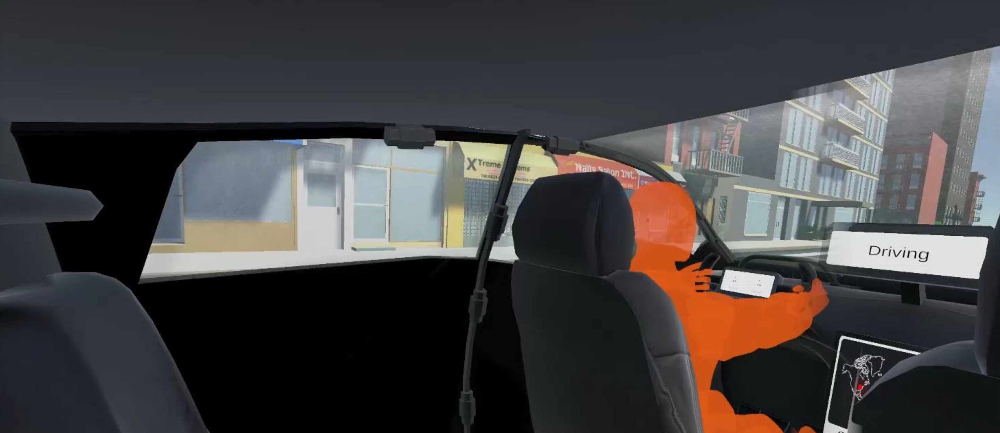
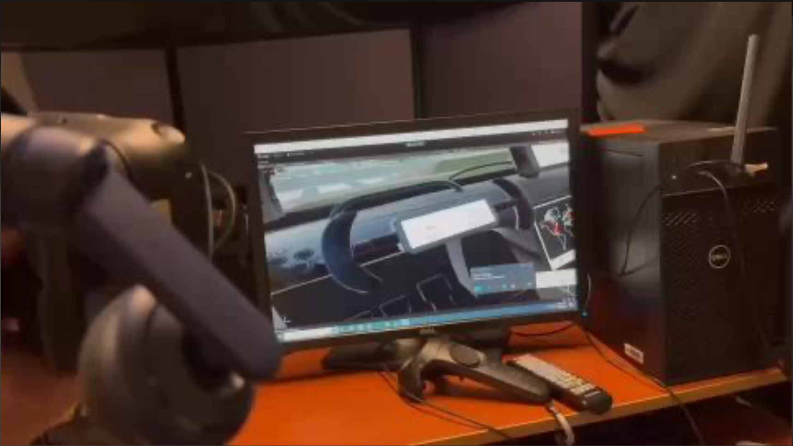
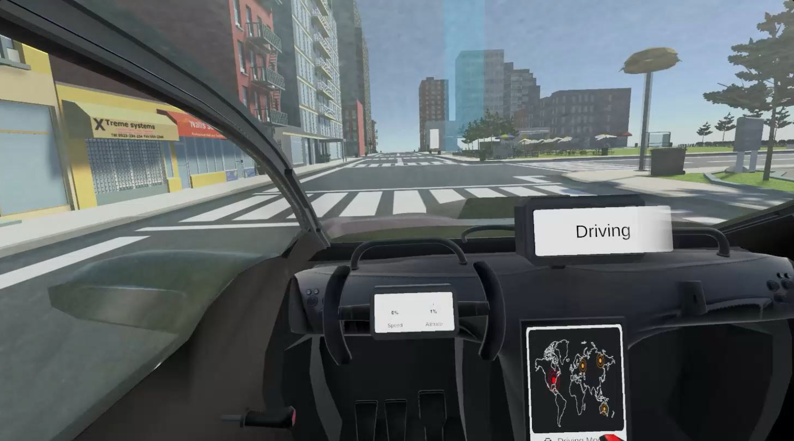

Flying Car InteractionTrust Across the Driving-to-Flying Transition
How do we establish trust, comfort, and engagement in users when they ride in cars that can switch between driving and flying autonomously? A VR research project on the moment that question matters most: the transition itself.
The moment a car becomes an aircraft is where trust is won or lost.
This was a semester-long project for Georgia Tech's CS 8803 Sonification Lab, done with Jiayi Chen. We explored what it would feel like to ride in a flying car in a near-future city — specifically the transition stages between ground driving and airborne flight, and how those stages affect trust, comfort, and perceived control.
Our goal wasn't to make something that just looked futuristic. We wanted to understand what interaction design decisions reduce cognitive load, support situational awareness, and keep users feeling in command of a vehicle that can suddenly become something else.
Using Unity and VR hardware, we built a cityscape simulation to prototype vehicle behavior, test transitions between driving and flying modes, and test how interface, lighting, and feedback decisions affected the illusion of being in control. Central to the work was VertiSpots — takeoff and landing hubs for vertical flight — and both manual and automated vehicle modes, so we could study how control handoffs land with users in an immersive setting.
Four questions shaped everything we built
- How do people sense trust and safety during the transition from driving to flying mode?
- What kind of feedback — visual, audio, or haptic — helps people feel more comfortable or in control during that transition?
- How is the experience different for a driver versus a passenger?
- What can real-world automation systems like Tesla's Full Self-Driving or Rivian's Level 4 teach us about building trust into flying vehicles?
We hypothesized that timely feedback, ambient feedback, and clear role definition (driver or passenger) would directly affect how safe and real the experience felt. Both held up in testing.
What didn't work taught us as much as what did
We started from an inherited project with missing dependencies and incomplete documentation, and neither of us had VR development experience going in. We rebuilt from there: a new VR city environment on SteamVR (cross-platform across Meta Quest, HTC Vive, and Valve Index), re-factored for a VR render pipeline, with a dynamic play-space boundary so users couldn't wander out of the simulation or exit the vehicle unintentionally.
The automation pivot
Our first approach to simulating autonomous driving used Unity's NavMesh. It didn't work — NavMesh is built for omnidirectional movement like humans or animals, not wheeled vehicles bound by lanes and traffic rules, and the resulting cars drove unrealistically and ignored traffic laws entirely. We switched to a recording-and-playback system instead: we drove routes manually, recorded the sessions, and played them back in VR to simulate the automated condition. It gave us fine-grained, repeatable control over "autonomous" behavior for testing, at the cost of only working for fixed routes we'd recorded in advance.


Interface and ambient design
For the heads-up display, we wanted control states to be immediately legible, so we looked outside the automotive world: Boeing 787 Dreamliner cockpit lighting (soft blue and red tones that protect night vision while keeping pilots focused over long hauls) and GM SuperCruise's ambient lighting approach, which uses subtle light shifts to signal transitions between manual and autonomous modes without a user having to read a dashboard.
People wanted more feedback, not less
We ran a small user study comparing three ways to experience the same ride: driving it yourself, riding as a passenger in an automated car, and controlling it with a gamepad in a more gamified version.


Driving felt riskiest, not safest
Manual driving felt more disorienting and anxiety-inducing than being a passenger. The added responsibility and control made it feel more risky, not less.
The controller felt safe but less real
The gamepad version read as game-like, which lowered perceived risk but also pulled people out of the experience — it felt less immersive and less realistic.
Trust tracked with visible control
Trust in the automation went up when there were visible signs of it working — a driver avatar, regular feedback, smooth handoffs. Trust dropped when the participant was driving or using the controller, since it felt more like a simulation than a real ride.
Silence was the biggest problem
People didn't understand where they were going, when a transition was coming, or what the system was "thinking." Predictive path displays, a speedometer, and Waymo-style confidence indicators were requested repeatedly — even a simple top-down map made people feel noticeably more oriented.
Participants rated their sense of safety about equally across all three scenarios, but on instinct rather than any specific stated reason — trust here wasn't fully conscious or articulable.
Rivian's Level 4, not Tesla's FSD
To ground our design decisions outside the simulation, we compared two real automation systems: Rivian's Level 4 highway automation and Tesla's Full Self-Driving.
Rivian Level 4 — the model to follow
- Handles most situations independently, letting the user relax instead of constantly monitoring
- Smooth, predictable transitions between driving and automation
- Natural decision-making at mode shifts — exactly what driving-to-takeoff needs
Tesla FSD — what to avoid
- Requires frequent human intervention, which is the opposite of what seamless flight transitions need
- Higher cognitive load and stress during mode shifts
- Abrupt handling that would translate to real discomfort transitioning to flight
The takeaway we carried into the design: flying car automation should look like Rivian's approach, not Tesla's. Mode transitions need to be smooth, gradual, and clearly communicated — trust is built through predictability, and sudden control shifts are what break it.
What we learned
-
Communication matters more than full transparency
Users don't need to understand an autonomous system's internal reasoning, but they need to feel it's communicating with them. Thin feedback on state transitions caused real confusion; clear indicators and light changes meaningfully increased trust.
-
Realism is timing and cues, not graphics
A well-timed lighting shift or directional cue did more for a sense of realism than texture quality or visual polish ever did.
-
Designing with constraints is the actual skill
The NavMesh failure, missing dependencies, and our own inexperience with VR tooling forced trade-off decisions at every step. Most problems had more than one solution; the job was picking the one that delivered the most with the time we had.
-
Letting go of perfection, personally
I pushed us toward prioritizing learning over a polished deliverable, and working through unfinished information instead of waiting for certainty. It reframed immersive UX for me — less a showcase of futuristic interface, and more a way to study human emotion and cognition under speculative conditions.
Where this research would go with more time
- Biometric monitoring — heart rate, skin conductance — to get an objective read on stress and trust instead of relying only on self-report
- Making the system explainable: voice commentary or AI narration so riders understand what's happening and why, not just that something is happening
- Dynamic route planning and multi-VertiSpot support, so the system feels like real infrastructure instead of a scripted demo
- Testing failure modes directly — what happens when something breaks, and how people react — since resilience and recovery matter as much as the happy path for any human-monitored automation